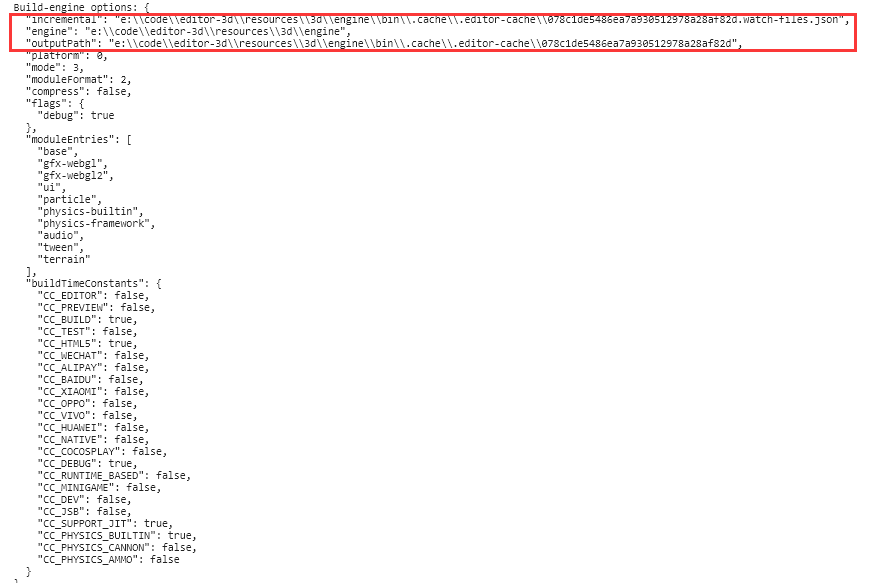
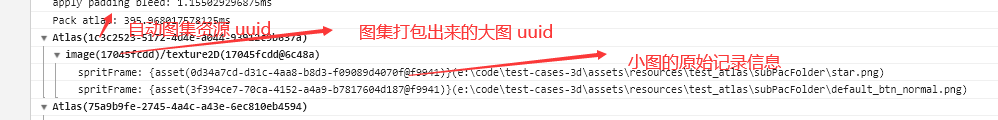

Build Process with FAQ
The build process is mainly divided into two parts, the General Build Process and the Platform Adaptation Process. The adaptation processing logic for each platform will be embedded in the Build panel as a separate plugin. The build plugin system is then open and developers can dynamically embed some build parameters into the panel for use.
General build Process
The general build process for Cocos Creator 3D consists of the following:
- Initialization of build parameters
- Prepare build data
- Write the built asset to the file system
- Organizing the data of
settings - Compression and writing of
settings uuid
Initialization of build parameters
This step mainly initializes the initial options passed to the build to the internal options of the build, does some parameter formatting, initializes the asset data of the build asset database, loads the latest asset information, and classifies it.
Prepare build data
The editor will first summarize the scene currently involved in the build and all assets in the resources directory. Each asset is packaged through the engine's deserialization process to find the dependent asset and recursion to pack the assets. The entire project's scripting environment is configured before being deserialized, that is, all non-plugin project scripts are loaded. Because whether the script loads correctly or not directly affects the deserialization, failure to load because the script is not written legally will directly result in build failure. If the dependent asset is lost in the deserialization process, a warning is issued, but the build continues nonetheless. The warning here does not mean that the problem does not need to be resolved, and if the asset loss is not resolved, it is difficult to guarantee that the problem will not occur after the build.
This step will also sort out the asset types based on the build's internal division, such as scenes, scripts, texture compression tasks, JSON grouping information, etc., and weed out asset information that is not used.
Note: All user scripts are loaded before this step is performed.
Write the built asset to the file system
After performing the previous steps, then we need to generate the used assets into the file system. After building, the serialized JSON files of all assets are placed in the res/import directory. The original files of all assets are placed in the res/raw-assets directory. The build process can be broken down into the following phases:
Build scripts: The scripts in the editor are divided into plugin scripts and non-plugin scripts.
The plugin script will copy the source file to the
build/srcdirectory, which is generated after the build based on the original directory structure. The plugin script does not support any script that needs to be compiled, such as TS or JS written in ES6. The asset information of the plugin script is written to thejsListarray insettings.The non-plugin script will package the source files into
project.js(project.dev.jsin debug mode) in the correspondingsrcdirectory. Checking thesourceMapoption will generate a correspondingmapfile, and thedebugoption will determine whether the script is compressed or not.
Auto Atlas: Query all Auto Altas assets in the project, and then pack SpriteFrame assets within Auto Altas into a big Sprite Atlas assets, serialize assets to
JSONaccording to the configuration of Auto Atlas assets. This step will modify the JSON grouping information, asset asset grouping information and add texture compression task. If the packAutoAtlas option in the Build panel is not checked during the build, no processing is done.Compress Texture: Compress the texture assets according to the organized texture compression tasks and write them to the folder generated after build. If the Compress Texture option in the Build panel is not checked during the build, no processing is done.
Build engine: Follow the settings in the menu bar Project -> Project Setting -> Modules to discard the unused engine modules, and package them into the
src/cocos3d.jsfile. Checking the sourceMap option will generate a correspondingmapfile. Checking the debug option will determine whether the script is compressed or not.The main steps in building the engine are as follows:
Get the engine module information in the menu bar Project -> Project Setting -> Modules.
Check if the engine version in the cache is the same as the engine version that needs to be compiled, and if it is, copy it without compiling.
If compilation is required, perform the task of packaging the engine according to the engine interface. Copy the compiled
jsfile and save the engine's modification time.When compiling the engine, you can view the output log information. Please refer to the log information documentation for the detail log viewing method.

Rules for reusing engine files: The packaged engine files will be placed in the
bin/.cache/.editor-cachedirectory of the engine, according to the hash values generated by the parameters that affect the engine compilation. And the.watch-file.jsonfile contains the modification times for the individual engine files.engine-folder |--bin |--.cache |--.editor-cache |-- 1dc4a547f9...63a43bb8965.watch-files.json |-- 1dc4a547f9...63a43bb8965 |-- 1dc4a547f9...63a43bb8965.map ...As soon as any of the engine's build options change, the engine will recompile. Specifically affecting the engine build are:
debug: Whether in debug mode
- includeModules: Setting engine modules
- sourceMaps: Whether or not to enable
sourceMap - platform: Build platform
- the modification times for the engine files.
build JSON: Serialized JSON is merged based on the JSON grouping and written to the file system (placed in the
res/importdirectory). If in release mode, compression is also performed on theuuidin the serialized JSON.General assets copy: Some of the original assets (rawAssets) in the
libraryare copied directly into theres/raw-assetsfolder generated after the build.MD5 Cache: Add the MD5 suffix to all the assets in the
resfolder and organize the data to record insettings.Generate
main.jstemplate file: Configure project settings into themain.jsfolder according to the the developers specified options. Generate them in the build output directory.
Organizing the data of settings
The main thing is to prepare the necessary configuration information for the game start based on the data of previous asset collation.
About the structure of settings:
{
debug: boolean; // Whether in debug mode
designResolution: { // Canvas resolution
width: number; // The width of canvas resolution
height: number; // The height of canvas resolution
policy: number; // Full screen aspect adapted mode
};
launchScene: string; // URL of the initial scene
platform: string; // Platform
rawAssets: { [index: string]: { [uuid: string]: string[] } };
// Store the asset URL and type loaded in assets
// Example: "bba00d3a-2f17-4511-b47c-0d584b21b763@6c48a": ["test/right/texture", "cc.Texture2D", "bba0...@6c48a"]
// "bba0...@6c48a": ["test/right/texture", 1, 1]
scenes: Array<{url: string, uuid: string}>; // The array of scenes information involved in the run
scriptPackages: Array<{moduleId: string, file: string}>; // Script message array
jsList: string[]; // Script plugin array
moduleIds: string[]; // Information on all user script components
packedAssets: Record<string, IUuid[] | number[]>; // json grouping information
md5AssetsMap: { [index: string]: Array<string | number> }; // It is not available until md5Cache is checked, and the array is stored in the format of [uuid_1, md5_1, uuid_2, md5_2, ...]. If uuid_1 is a simple number, it means that the uuid index in the uuids array is stored.
uuids: string[]; // Arrays of uuid, only takes effect in release mode
assetTypes?: string[]; // Arrays of asset types, only takes effect in release mode
subpackages?: Record<IUuid, IPackageInfo>; // Subpackage asset information
renderPipeline: string; // renderPipeline information
}
The structure here only lists the settings structure under the general build process, and actually adds configurations as needed when packaging for different platforms.
Compression and writing of settings uuid
During the asset packaging process, the uuid of all assets involved in the build are continuously collected and then organized into setting.js. setting.js will be written to the build/src directory, which isgenerated after the build. The uuid in the file will be compressed or not, depending on whether it is in debug mode or not. Organize all used uuid and store the uuid that appear more than twice in the uuids array, and replaced with indexes. All assetType that appear more than twice are also stored in the assetTypes array, and replaced with indexes.
Build assets
At this stage, the editor will arrage the scenes assets that selected in Build panel and all assets in the assets directory. All assets will be deserialized by engine to find out the dependent assets in deep. Before deserialization, editor will load all the scripts（expect plugin scripts) in the project, if the script is written illegally and fails to load, it will make this build task stop immediately. If any dependent asset is missing during the deserialization process, a warning info will be print, but editor will continue to build. When warning info is printed, we recommend you to read and try to resolve it, otherwise it may cause some unexpect errors after build. During the packaging process, the assets will be re-compressed and serialized after deserialization to reduce the package size. Also, all serialized files will be sorted into deferent JSON groups to reduce the size of game package.
Assets that perform deserialization during the packing process will recompress the serialization to reduce the package size after packing. The serialized files of the texture assets are all packaged into a single JSON file, and the other serialized files are subpackaged according to the build options configuration.
Build scripts
The scripts in the editor are divided into plugin script and non-plugin script.
The plugin script will copy the source file to the
build/srcdirectory generated after the build based on the original directory structure, so the plugin script does not support any script that needs to be compiled, such as TS or JS written in ES6. The asset information of the plugin script is written to thejsListarray insettings.The non-plugin script will package the source files into
project.js(project.dev.jsin debug mode) in the correspondingsrcdirectory.
Platform Adaptation Process
The build provides a partial lifecycle hook function that facilitates the developer's involvement in the build during the different processing periods of the build. The build also provides a way for developers to add build options directly, as well as to modify the UI interface of the build panel, data verification, etc. At the moment these features are not open to the public, only briefly described here, but the platform building plugins within the editor have been developed in this way.
Frequently asked questions
The entire build process is in a separate worker, so if you want to see the log information during the build, please refer to the Build Log.
Please make sure that the scenes involved in the build can be previewed properly before the build, some of the scenes asset loss, script compilation failure problems can be exposed in the preview stage. Building on the premise of a normal preview allows for better troubleshooting and saves time.
Assets loading with a 404
In this case, please copy the uuid in the lost asset error message to Assets to find the corresponding asset, and then see if all the assets on which the asset depends are normal.
Assets loading with a 404 usually occurs in the following situations:
Assets that are not in
resourcesare dynamically loaded in the scriptReason: Only the assets in the
resourcesdirectory and those involved in building the scene will be packaged into the final release package. And only the asseturlin theresourcesdirectory will be written tosettings.js, if an asset is used in the script but not in theresourcesdirectory, then a 404 will appear when it is loaded.Solution: Move the used assets to the
resourcesdirectory.
The loaded asset had a problem when it was imported, causing the data to not be generated properly into the
libraryReason: All raw data during the build is obtained by reading the asset file in the
library, and if the import fails, the correct corresponding asset information will not be obtained.Solution: Find the corresponding asset through Assets panel, right click it, and select Reimport Asset in the menu.
Lost assets
Reason: asset builds look for dependencies through engine deserialization, and the most frequent problem is that the dependent asset is accidentally deleted during the project iteration, resulting in the loss of the asset. The loss of these assets may not normally be noticed, but will be exposed once the build is executed.
Solution: Use the Code Editor to find out which assets the
uuidis referenced by, and then modify the corresponding assets.
Script asset load error
The scripting environment needs to be configured for the build. If the error message is related to the script, please refer to the error message to modify the script. If it is not clear which script is reporting the error, you can find the uuid of the corresponding script in the error message's call stack, and then look for the location in Assets.
Find the image merged from Auto Atlas
The Auto Atlas prints the uuid information of the original small image and the merged large image during the build process, the uuid can be found in the Build devTools, then the large image can be found by searching in the res/raw-assets folder generated after the build using the uuid of the found large image. If there are too many images, you can search for uuid directly in the build log.

Engine compilation failed.
If it's a custom engine compilation failure, check your modified code, or custom engine path.